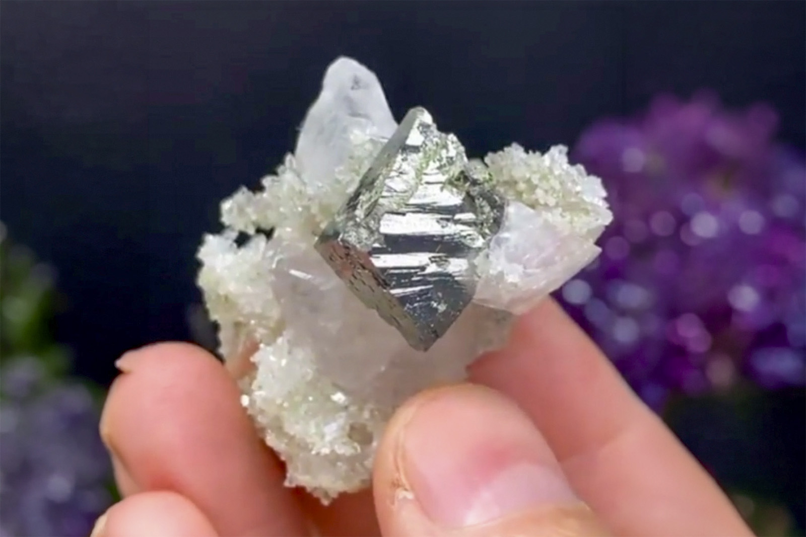

Arsenopyrite on Quartz Matrix with Calcite
"Euhedral Arsenopyite on Calcite with Quartz"
II-09607
Dalnegorsk, Dalnegorsk Urban District, Primorsky Krai, Russia
Purchased 2/27/2026 from Bobby Holley Fine Minerals for $150.00
Core Collection • In Collection
Details
Storage Type: Drawer
Storage Location: C1D2 The Reserve Miniatures
Size class: Miniature (63)
Dimensions: 3.5 × 2.7 × 3.8 cm
Mass: 19.83 g
Luster: Above Average, Metallic